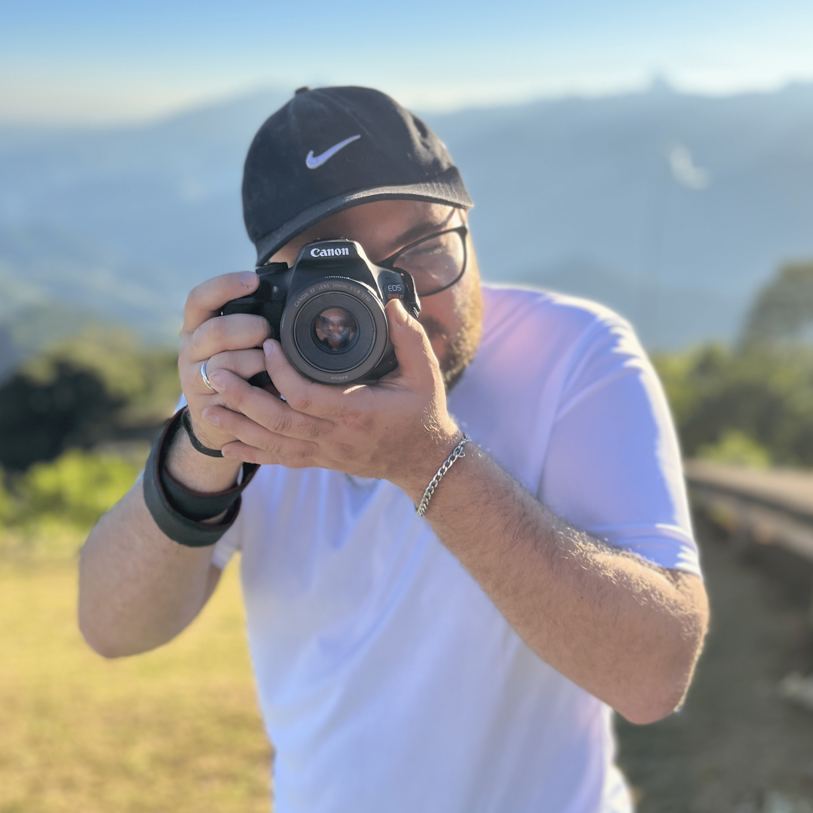
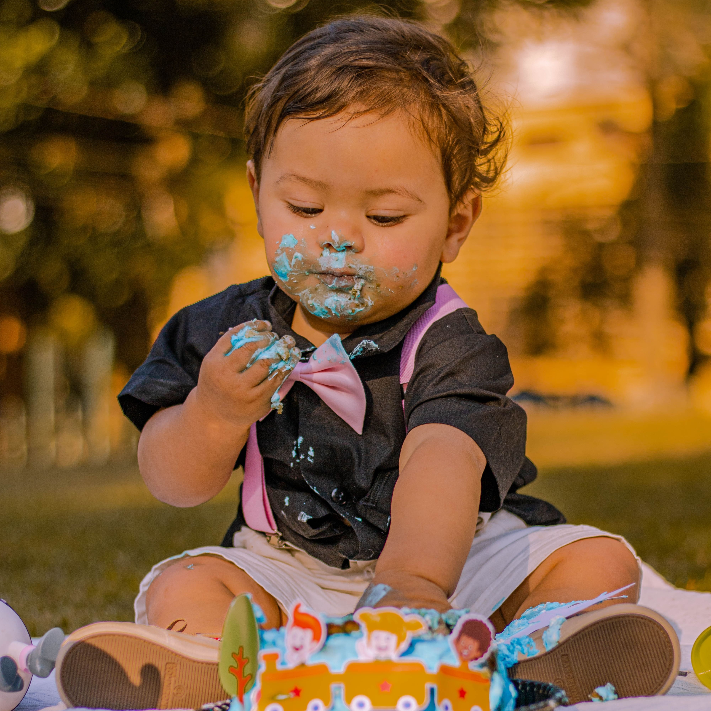
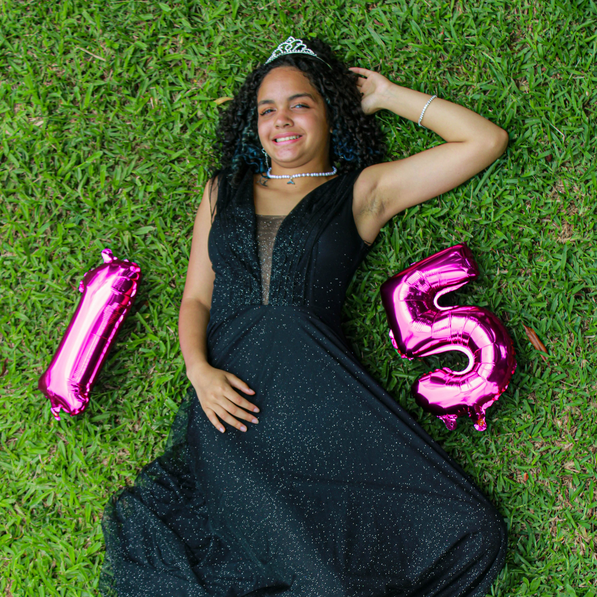
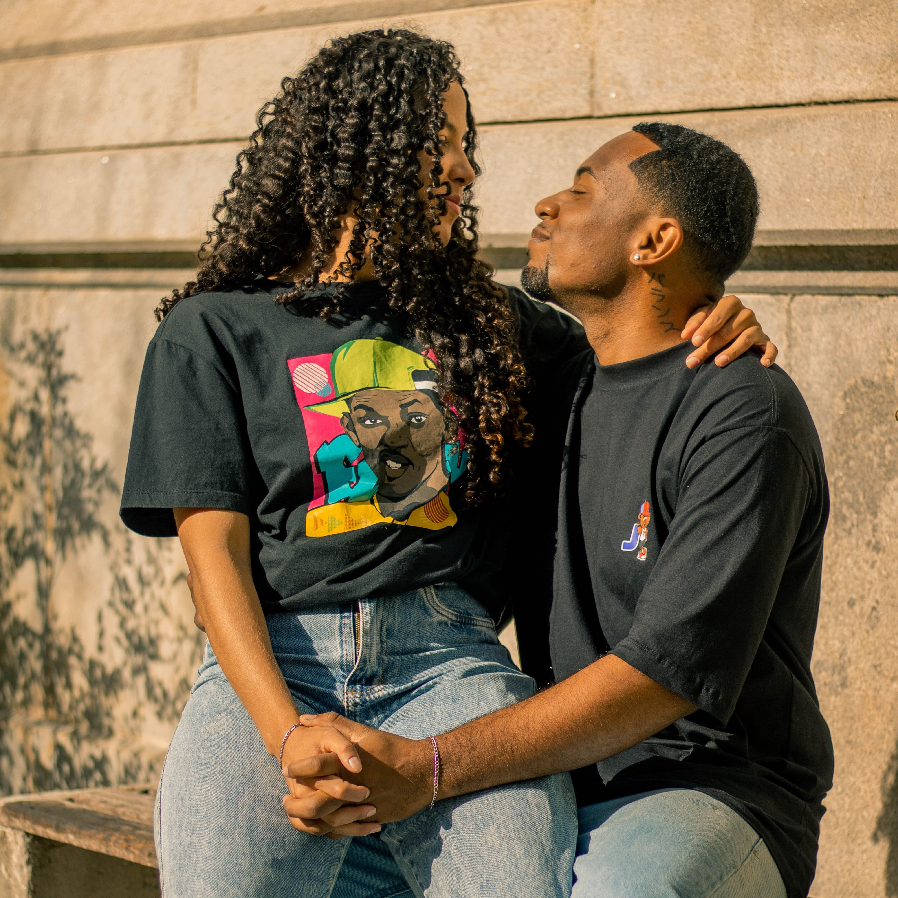
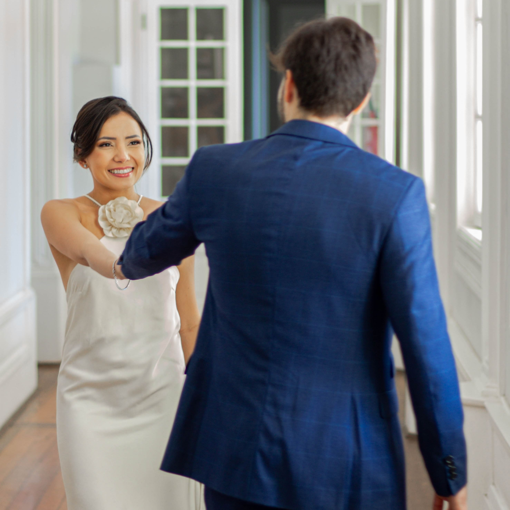
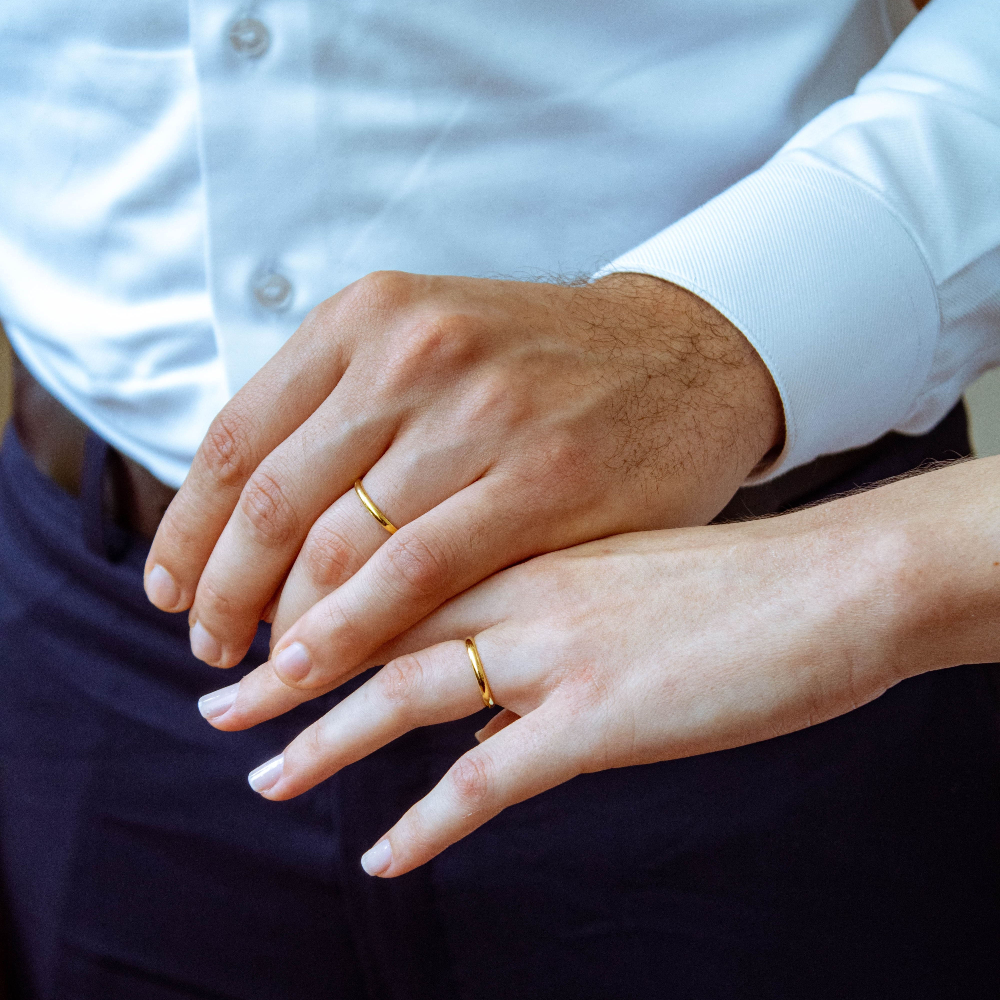
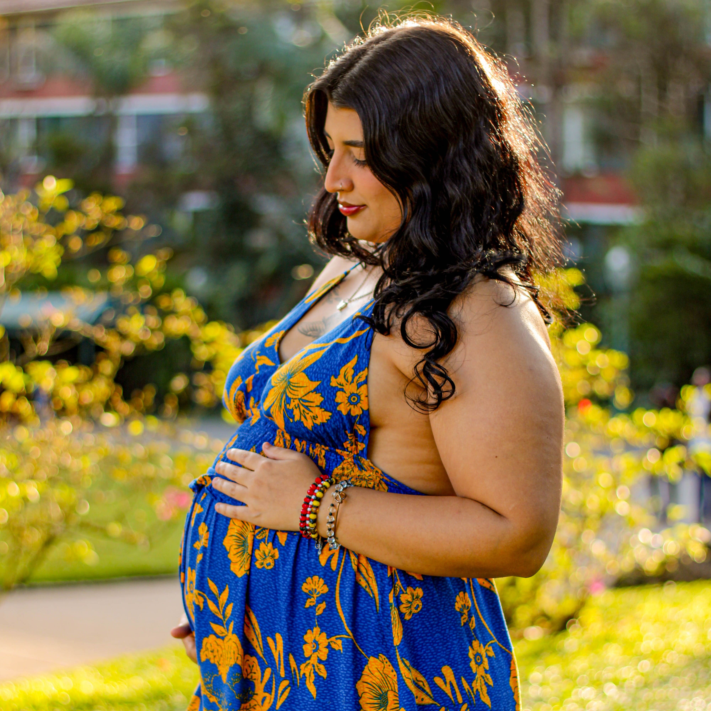
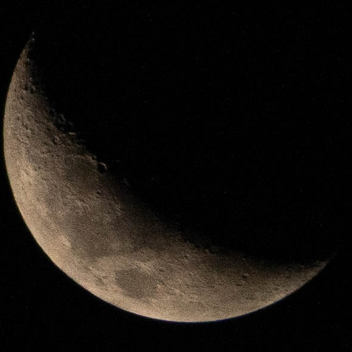
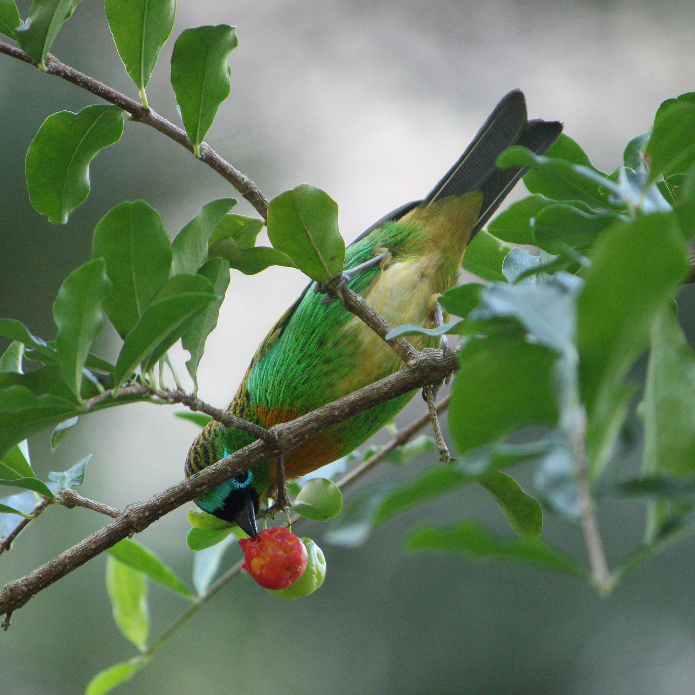

Mais do que fotografias, criamos imagens que revelam quem você é, valorizam sua essência e transformam momentos importantes em memórias que permanecem. Um olhar cuidadoso, uma experiência personalizada e um resultado feito para ser visto, sentido e lembrado.

Fotografia com propósito, estética e identidade.
Eu sou Lucas Nunes, fotógrafo e fundador da Nunestudio.
Meu trabalho é transformar momentos em imagens que permanecem. Acredito que uma fotografia de alto nível não depende apenas de uma boa câmera ou de uma técnica precisa, ela nasce da combinação entre direção, composição, luz e sensibilidade para enxergar aquilo que torna cada história única e inesquecível.
Na Nunestudio, desenvolvo experiências fotográficas personalizadas para pessoas, casais, famílias, marcas e empresas que valorizam uma estética cuidadosa e um resultado atemporal.
Cada ensaio é planejado de acordo com a identidade e o propósito de quem está diante da câmera. Da escolha do cenário e da iluminação à direção durante a sessão e à pós-produção, cada detalhe é pensado para construir imagens sofisticadas, naturais e autênticas.
Meu compromisso é entregar mais do que fotografias bonitas: entregar uma experiência e um resultado que tenham significado hoje e continuem relevantes amanhã.
Cada momento tem uma história, e cada história merece ser registrada de uma forma única. Seja um ensaio, uma celebração, um momento especial ou a identidade da sua marca, estou aqui para transformar sua ideia em imagens que tenham significado e personalidade.
Conte um pouco sobre o que você deseja e vamos planejar juntos uma experiência fotográfica feita para você.







